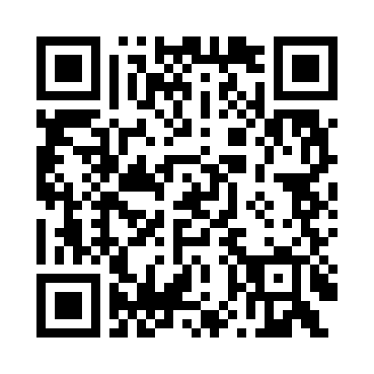
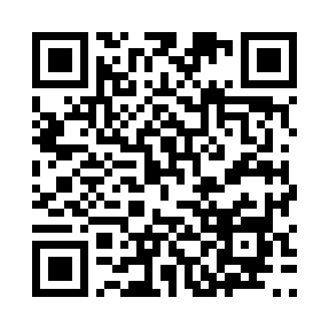
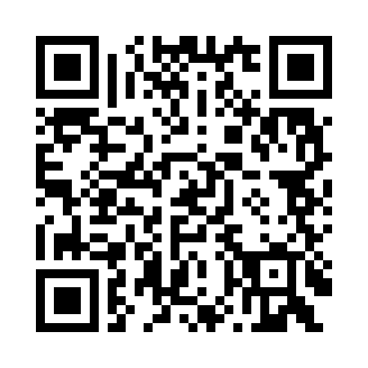
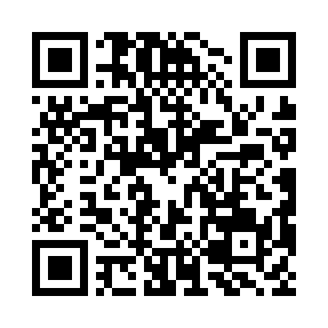

TORTUGA — QR dos cintos
Cole cada QR no cinto correspondente. O operador escaneia no início do turno.

CINTO-PRE-01Prensa 1
http://192.168.68.104:5005/checkin?belt=CINTO-PRE-01
CINTO-PIN-01Pintura 1
http://192.168.68.104:5005/checkin?belt=CINTO-PIN-01
CINTO-SOL-01Solda 1
http://192.168.68.104:5005/checkin?belt=CINTO-SOL-01
CINTO-EXP-01Expedição 1
http://192.168.68.104:5005/checkin?belt=CINTO-EXP-01